Performace Management 365
Frequently Asked Questions
- To set up custom-level permissions, follow these steps:
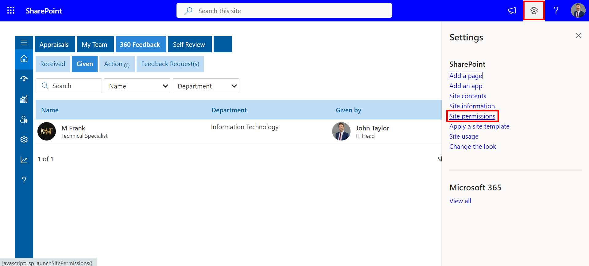
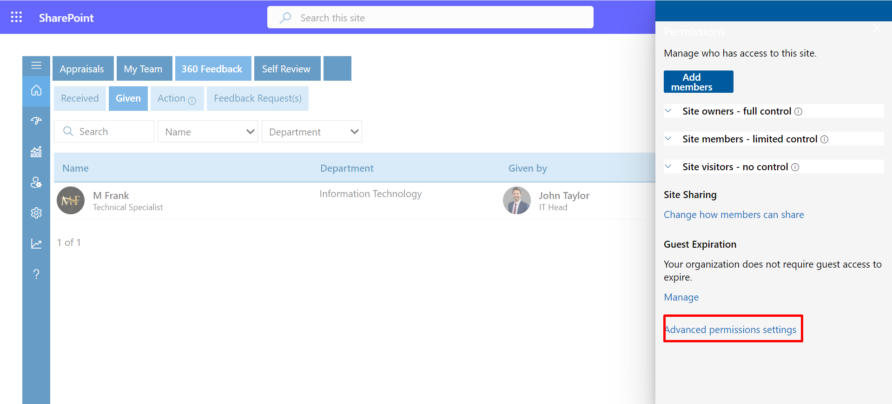
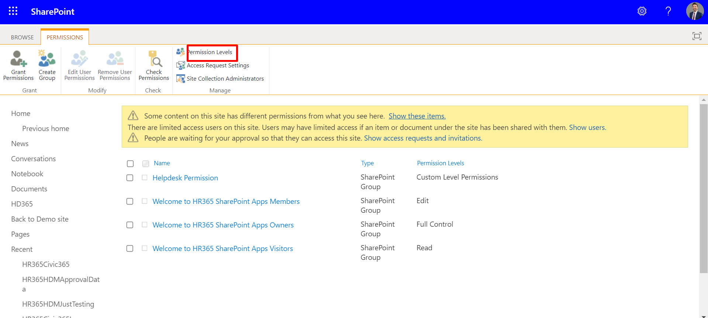


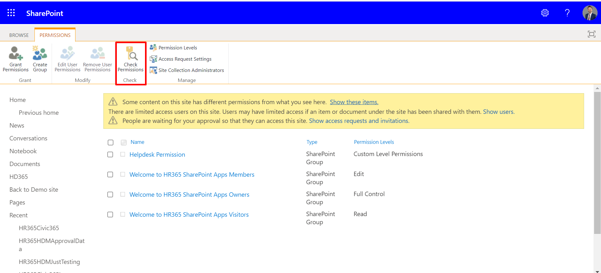
These steps will help you grant custom-level permissions efficiently.
- You can remove the application by following these steps:
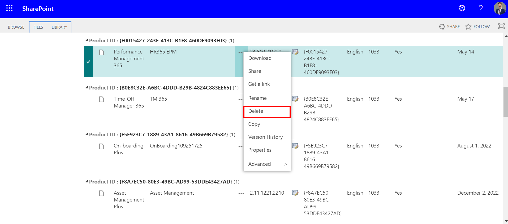
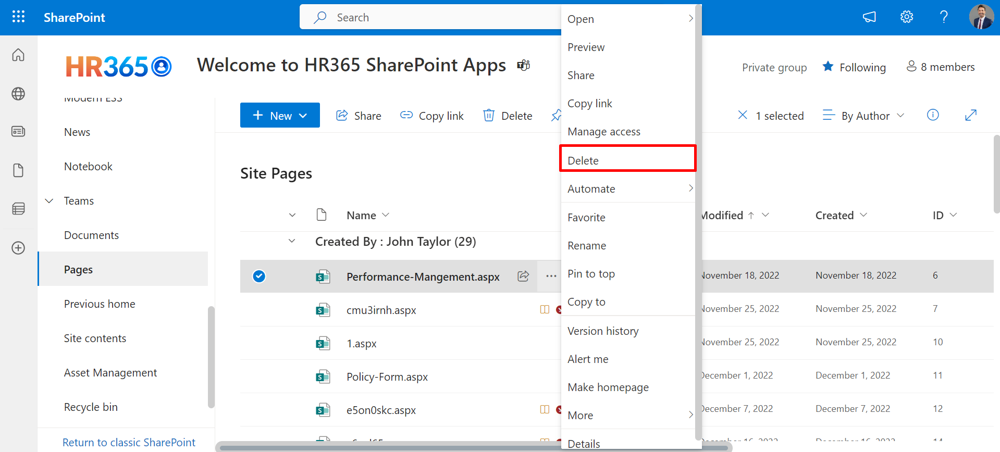
Please read this Article before Installing or adding the App in Microsoft Teams.
Follow these steps to safely revert to an earlier version of the Performance Management 365 application:
- Access the AppCatalog directly via the following link:
https://yourtenantname.sharepoint.com/sites/appcatalog/_layouts/15/tenantAppCatalog.aspx/manageApps - Navigate to the AppCatalog and search for the Performance Management 365 application.
- Select the application and click on More Options.
- Click on Version History.
- Select the version you wish to restore, then choose the appropriate time and date.
- Options such as View, Restore, and Delete will be displayed.
- Click Restore and confirm the action by selecting OK.
- Once restored, verify the version number displayed below the selected time and date.
- After confirmation, select the package, click on Files, and choose Deploy.
- In the deployment popup, check the required checkbox and click Deploy to finalize the process.
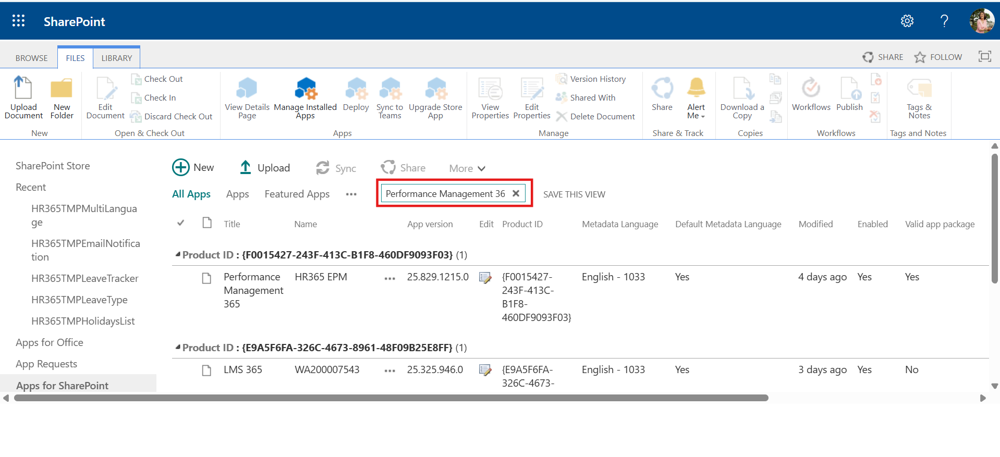
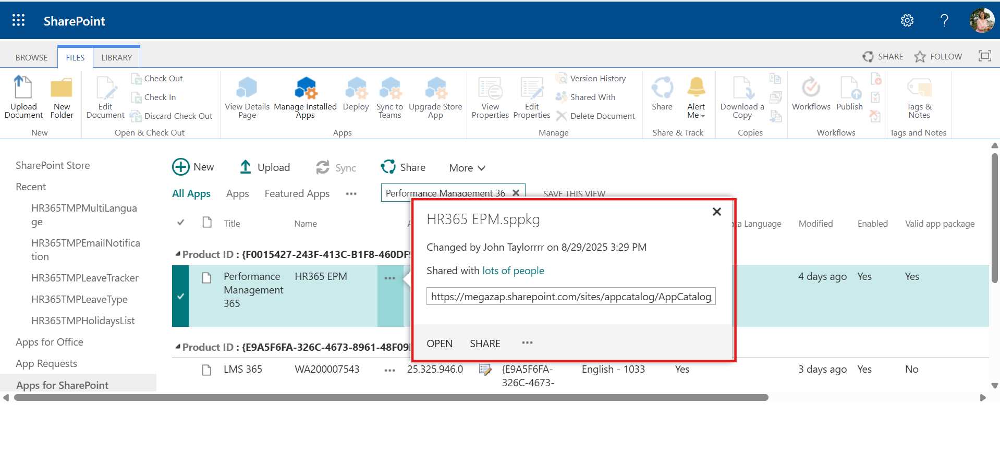
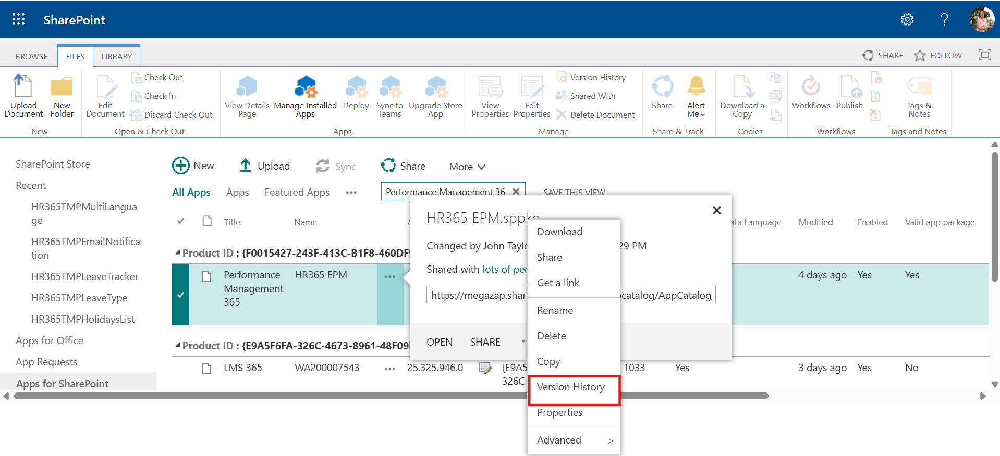
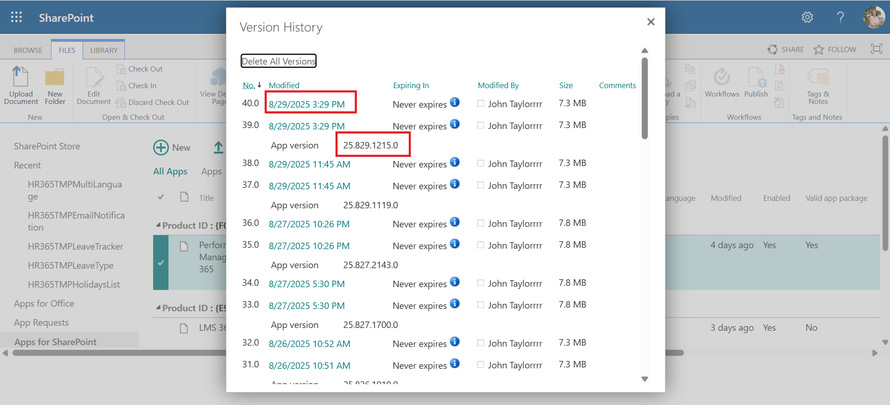
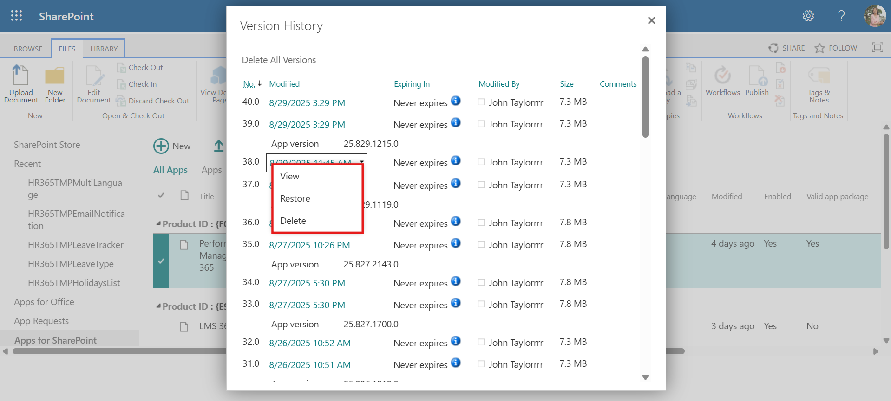
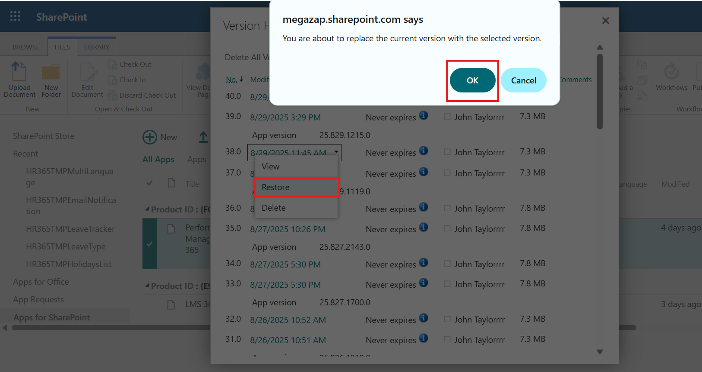
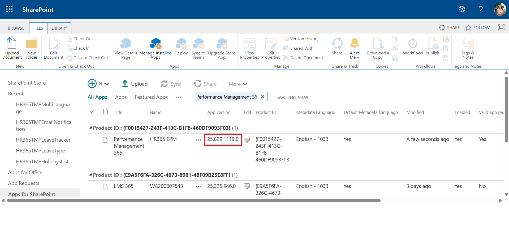
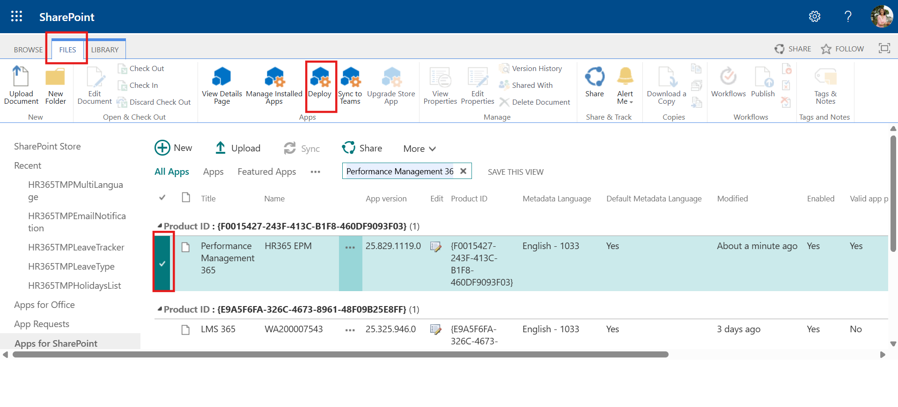
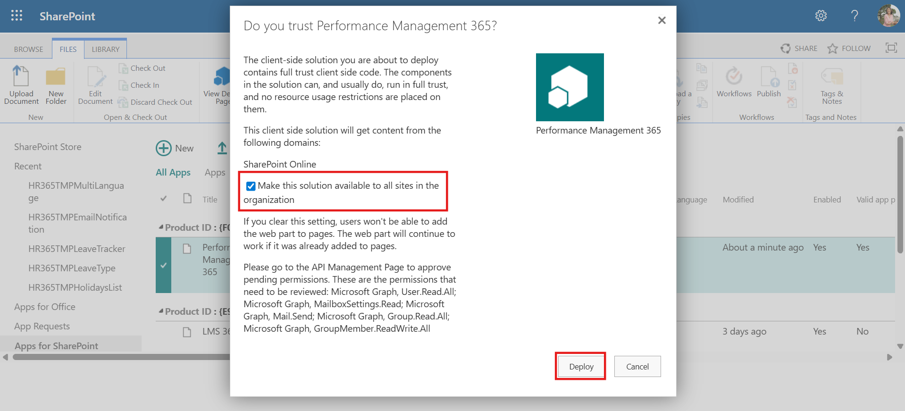
- Follow the steps in this guide.
Step 1 – Navigate to the Administration Menu
From the Home page, click the Administration button on the left navigation bar.
Step 2 – Open the Templates Section
From the left navigation bar, a dropdown menu with several configuration options will visible. In that dropdown scroll down and click on Template(s). This opens the Templates panel, which contains three tabs: Global Template(s), My Template(s), and Assign Template(s).
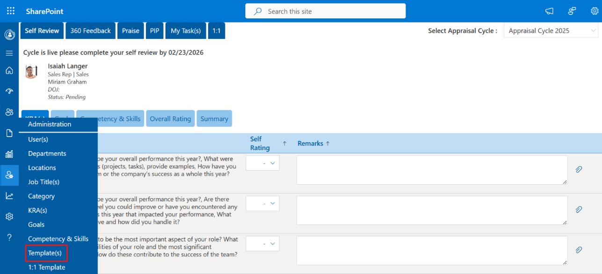
Global Template(s) contains system-wide templates visible to all users. My Template(s) shows templates you have created. Use the Assign Template(s) tab to assign templates to specific employees or groups.
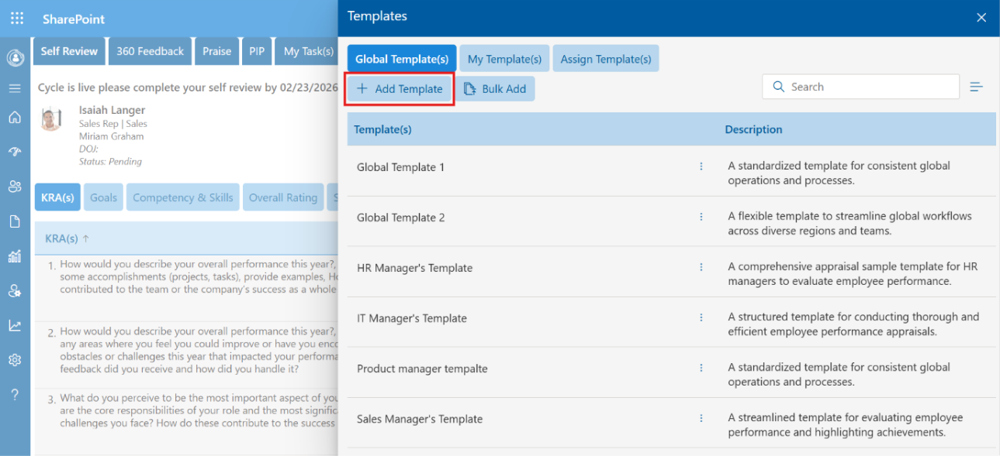
Step 3 – Create a New Template
To create a new template, click the + Add Template button in the Global Template(s) or My Template(s) tab. The Add Template form will open on the right side of the screen.
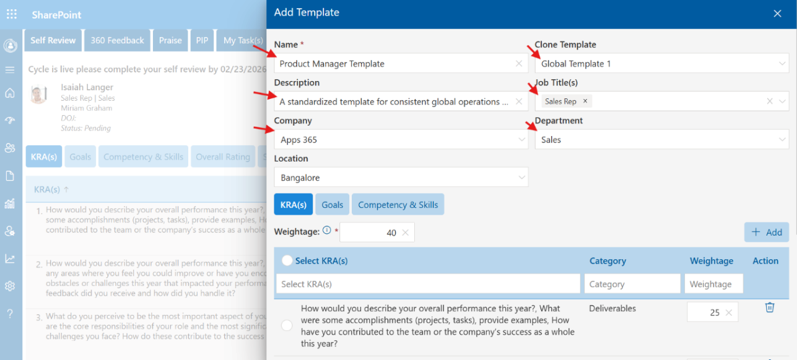
Fill in the Template Details
Complete the following fields to define the template:
- Name – Enter a clear, descriptive name for the template (e.g., "Product Manager Template"). This name will appear in the template list and during assignment.
- Clone Template – Optionally select an existing template to clone. This copies all questions and settings from that template into the new one, which you can then modify as needed.
- Description(Optional) – Provide a brief description of the template's purpose — for example, the type of employee it is intended for or the review focus area.
- Job Title(s) (Optional) – Select one or more job titles this template applies to. If an employee's job title matches, the template can be auto-assigned without any additional manual steps.
- Company (Optional) – Select the company or legal entity this template is scoped to.
- Department (Optional) – Select the department the template applies to.
- Location (Optional) – Select the office location the template is applicable for
Auto-Assignment: If an employee satisfies all the specified conditions (job title, company, department, and location), the template will be automatically assigned to them — skipping the need for manual assignment.
Step 4 – Verify Total Weightage
Before saving, ensure that the combined weightage across all KRA(s), Goals, and Competency & Skills adds up to exactly 100.
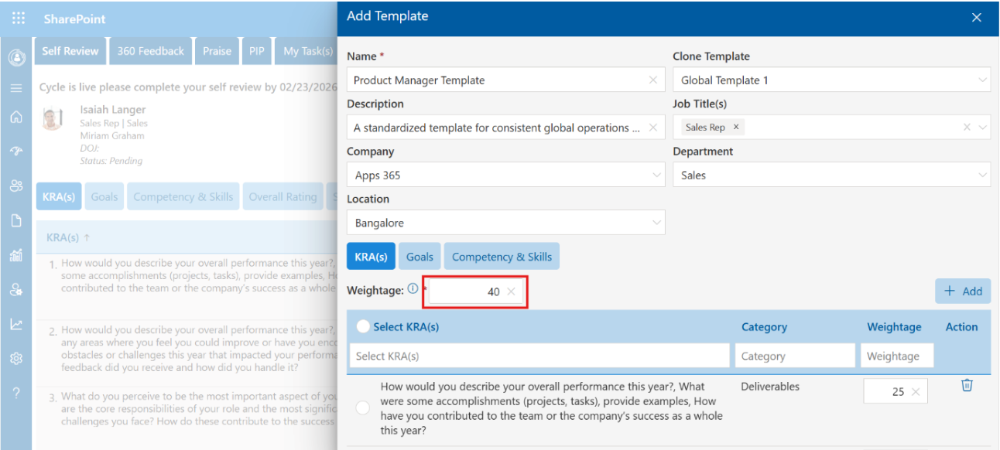
Tip: Distribute the weightage thoughtfully across sections to reflect your organisation's performance priorities. For example, KRAs might carry 60%, Goals 25%, and Competency & Skills 15%.
Step 5 – Verify Total Weightage Module wise
Before saving, ensure that the weightage within each module KRA(s), Goals, and Competency & Skills adds up to exactly 100%. Each module is calculated independently for example, if you add 4 KRAs, their combined weightage must equal 100%; the same applies to Goals and Competency & Skills
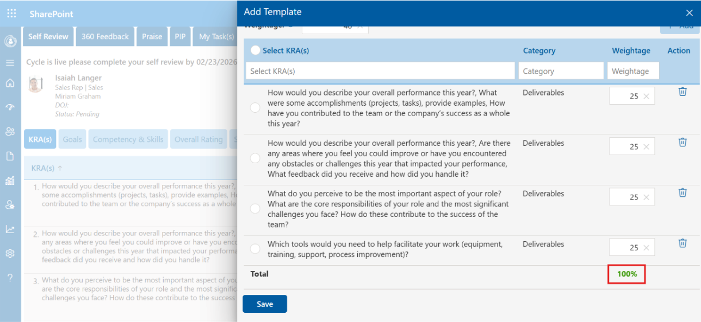
Step 6 – Save the Template
Once all KRAs, Goals, and Competency & Skills have been added and the total weightage is 100, click the Save button at the bottom of the Add Template panel. The template will be created and saved to the system.
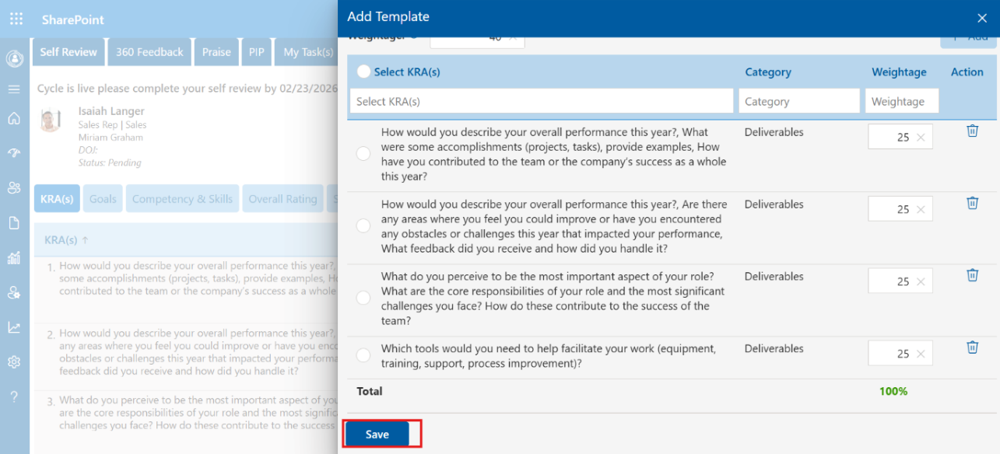
Step 7 – View Your Saved Template
After saving, navigate to the My Template(s) tab in the Templates panel. Your newly created template will appear in the list with its name and description.
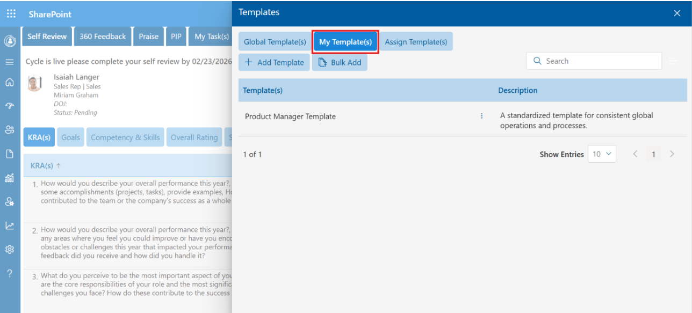
Step 8 – Assign the Template
To manually assign a template to specific employees or groups, navigate to the Assign Template(s) tab. Here you can assign templates based on a variety of criteria:
- Appraisal Cycle – Assign to all employees in a specific cycle.
- Department – Assign to all employees in a specific department and so on.
Select the template from the Select template dropdown, choose the assignment method from the Assign Selected Template by dropdown, and fill in the Assigned To field. Then click Save to complete the assignment.
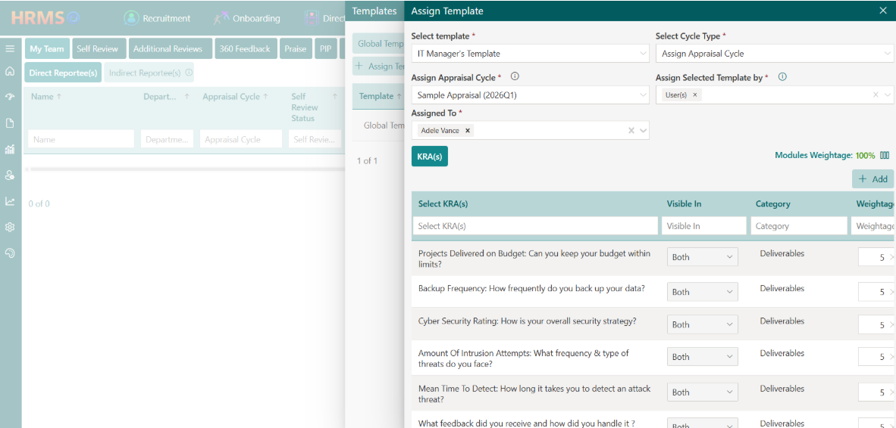
This guide walks you through setting up and configuring an Appraisal Cycle in the system, from navigating to the settings page all the way through saving the completed cycle.
Overview
An Appraisal Cycle defines the time and structure used to evaluate employee performance. It controls key parameters such as review duration, participants, and stage timelines. Once configured and saved, the cycle becomes available for employees and appraisers.
Step 1 – Access the Settings Panel
Locate the Gear icon in the left-hand navigation bar. This icon provides access to all administrative and configuration settings for the application.
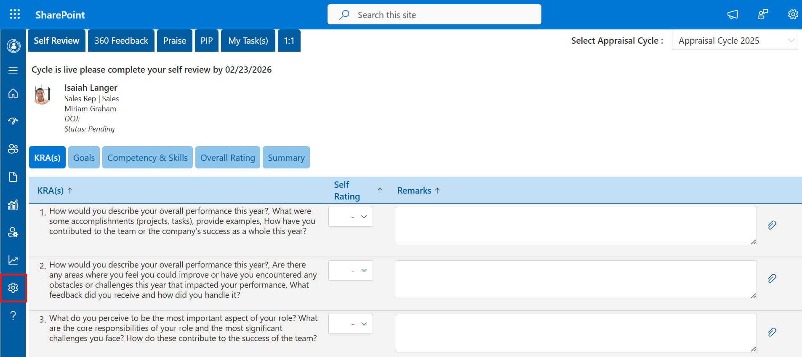
Step 2 – Open the Appraisal Cycle Section
Within the Settings panel, navigate to the Features column on the right-hand side. Click on Appraisal Cycle to open the management page.
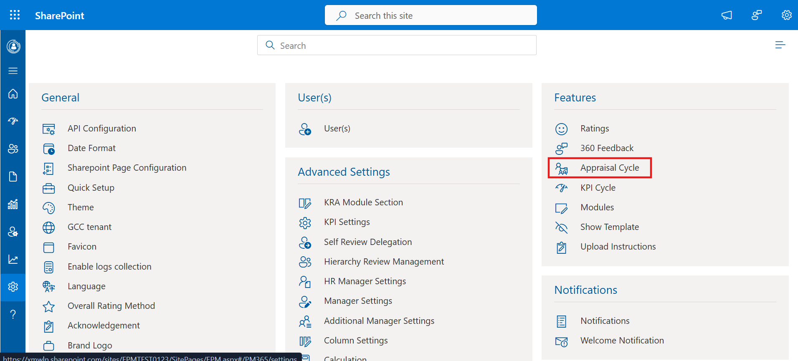
Step 3 – Configure the Appraisal Cycle
a. Create a New Cycle
Click the + Add button at the top-left of the Appraisal Cycle page. The "Add Appraisal Cycle" panel will open.
b. Name of the Appraisal Cycle
Enter a descriptive name such as "Annual Review 2025" or "Q3 Performance Cycle".
c. Select Appraisal Cycle Duration
- Quarterly
- Half-Yearly
- Yearly
d. Appraisal Cycle Start Date
Set the beginning date of the evaluation period.
e. Appraisal Cycle End Date
Set the ending date of the evaluation period.
f. Review Start Date
This is when the review workflow becomes active for employees and appraisers.
g. Number of Days for Self Review
Define how many days employees have to complete their self-assessment.
Note: If not completed before deadline, employees must request HR to reopen.
h. Number of Days for Appraiser's Review
Define the number of days for managers to review employee submissions.
i. Number of Days for Collaboration
Set the days for HR and leadership calibration to ensure fairness.
j. Number of Days for Review Conclusion
Define the days to finalize ratings and prepare communication to employees.
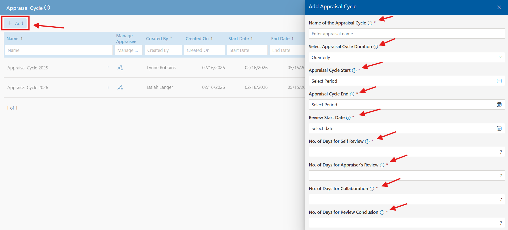
Step 4 – Save the Appraisal Cycle
Click the Save button at the bottom of the panel. The new cycle will appear in the Appraisal Cycle list.
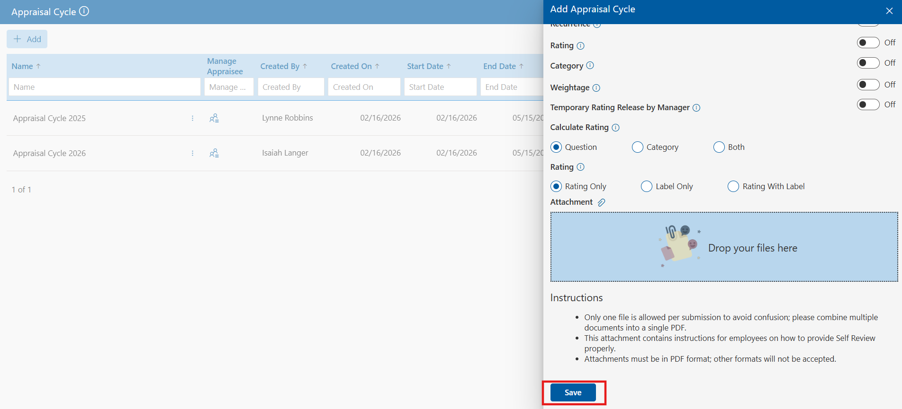
Adding Employees to the Appraisal Cycle
After saving, a new window opens where you can add employees. Initially, the list will show “No data available.”
Step 5 – Manage Appraisees Panel
Click the + Add button to open the Employee Selection dialog.
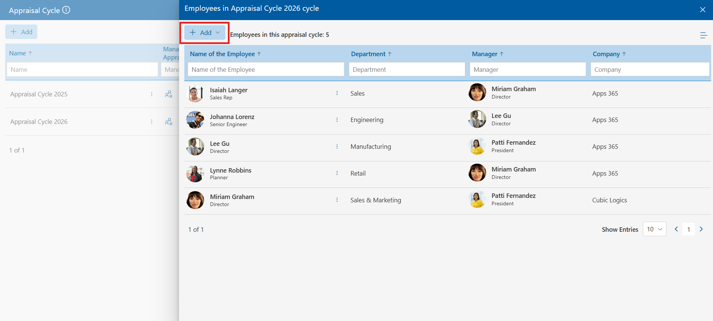
Step 6 – Select Employees Using Checkboxes
Check the box next to each employee you want to enroll. You can select multiple employees.
Click Save to add them to the cycle. Click Cancel to close without saving.
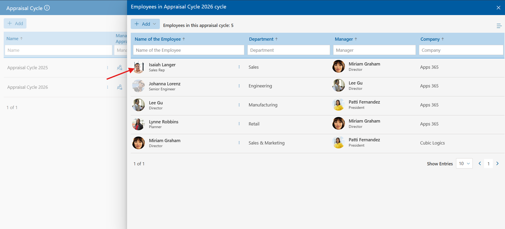
Once you have selected all the employees you want to include, click the Save button at the bottom of
the Employee Selection dialog. The selected employees will be added to the appraisal cycle and will
appear in the "Employees in Appraisal Cycle" panel.
If you wish to cancel without making any changes, click the Cancel button to close the dialog
without saving.
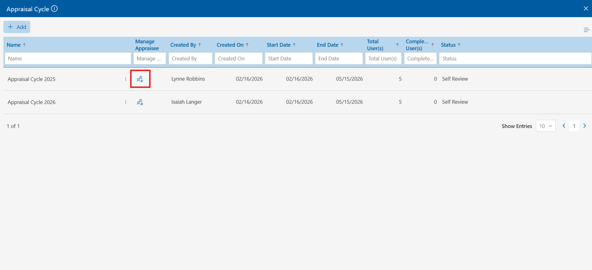
Tip: You can return anytime to add or review enrolled employees, even after the cycle goes live.
1. Praise Given
Click on Praise Given to view the list of employees to whom you have given praise.
This section allows you to track and review all appreciation messages you have shared.
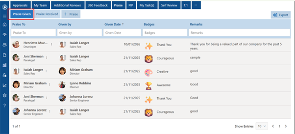
2. Praise Received
Click on Praise Received to view praise you have received from colleagues or managers.
Employees can use this section to see all appreciation messages sent to them.
3. Giving New Praise (+ Praise)
Click on the + Praise button to send appreciation to an employee. Follow the steps below:
- Enter the name of the employee to whom you want to give praise.
- Select the appropriate badge for the employee.
- In the Share Your Thoughts section, enter the reason for giving the praise.
- Choose a border color for the “Share Your Thoughts” section.
- Click Submit to complete and send the praise.
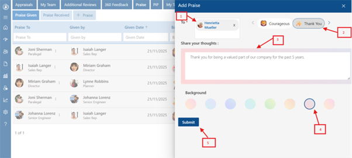
4. Viewing Submitted Praise
After submission, you can view all praise messages you have given in the Praise Given section.
The employee will be able to view the praise in their Praise Received section.
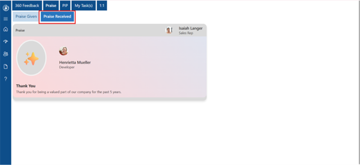
The 1:1 (One-on-One) module helps employees and managers schedule, conduct, and track one-on-one meetings, discussion points, and follow-up tasks in a structured way.
Home Page – 1:1
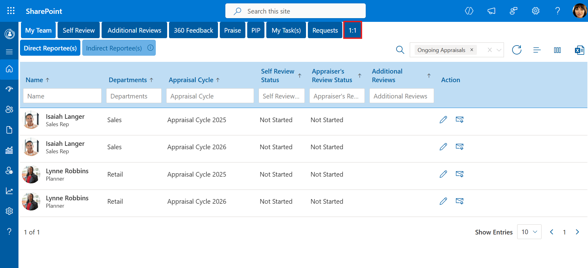
1. Home Page – Tabs Overview
- Meetings – Displays all one-on-one meetings assigned to you.
- My Tasks – Shows tasks assigned to you from meetings.
- Team Tasks (Managers Only) – Displays tasks assigned to team members.
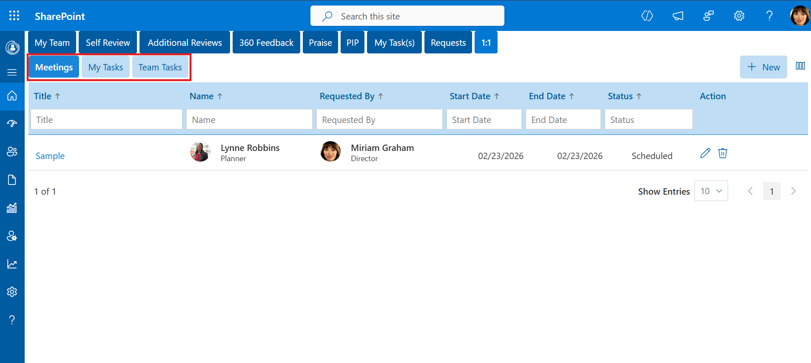
2. Meetings Tab
Purpose
The Meetings tab shows all one-on-one meetings associated with the logged-in user.
3. Creating a New 1:1 Meeting (+ New)
How to Create a Meeting- Click the + New button located at the top-right corner.
- The Add Meeting panel opens.
Fields to Complete
- Meeting Title
Enter a meaningful title to identify the meeting. - Meeting Template
Select a template to auto-populate agenda and discussion points. - Participants
Use the people picker to select the employee(s). - Start Date/Time
Choose the meeting Start Date. - End Date/Time
Choose the meeting End Date. - Recurrence
Enable if the meeting repeats (weekly, monthly, etc.).
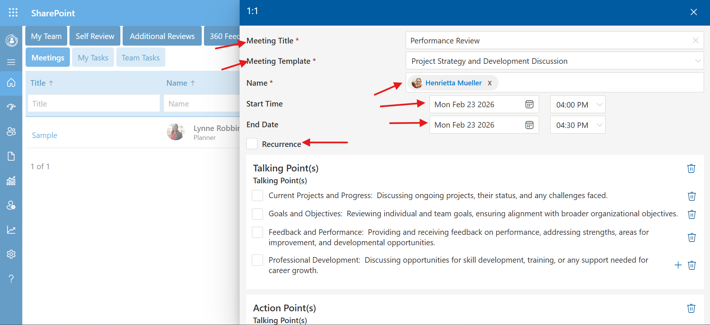
4. Adding Talking Points
Purpose
Talking Points define the key discussion topics for the meeting.
How to Use
- Select predefined talking points using checkboxes, or
- Click the + (Add) icon to create custom talking points
- Project updates
- Performance discussions
- Challenges or blockers
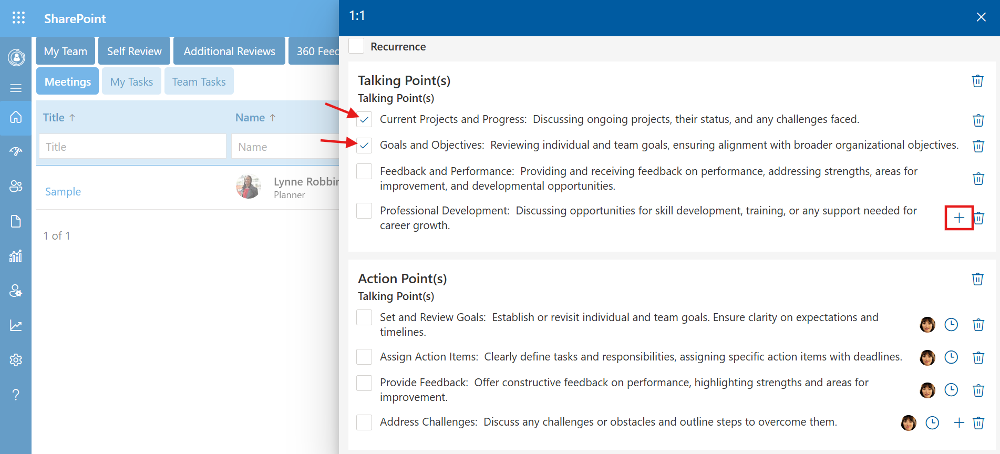
5. Adding Action Points (Tasks)
Purpose
Action Points capture tasks or follow-ups discussed during the meeting.
How to Add
- Click the + icon under Action Points
- Enter task details
-
These tasks automatically appear in:
- My Tasks (for the assignee)
- Team Tasks (for the manager)
- User can change/Assign the task owner by clicking the user profile
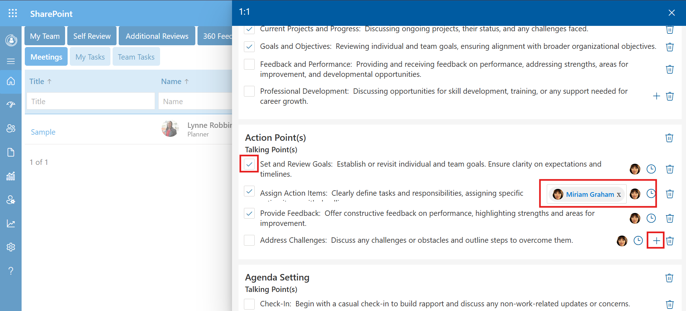
- User can change/Assign the task owner by clicking the user profile
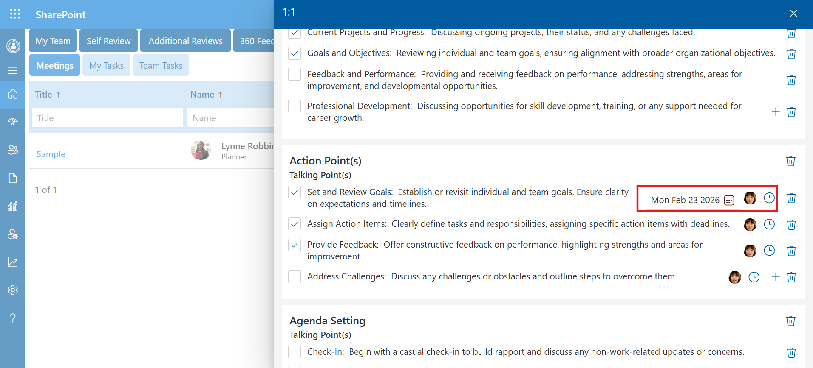
- User can be able to assign the task due date by clicking the clock icon
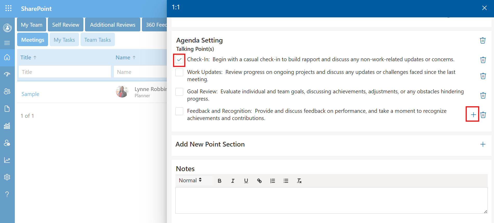
6. Agenda Settings
Purpose
The Agenda section structures the flow of the meeting.
How to Configure
- Select predefined agenda items (e.g., Work Updates)
- Add custom agenda items using the + icon
- Reorder or remove items as needed
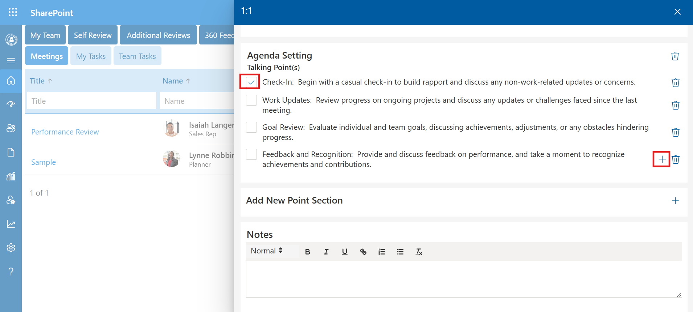
7. Notes and Attachments
Notes
-
Use the Notes field to record:
Key discussions
Decisions made
Meeting summaries
Attachments
-
Upload files such as:
Reports
Documents
Previous meeting references
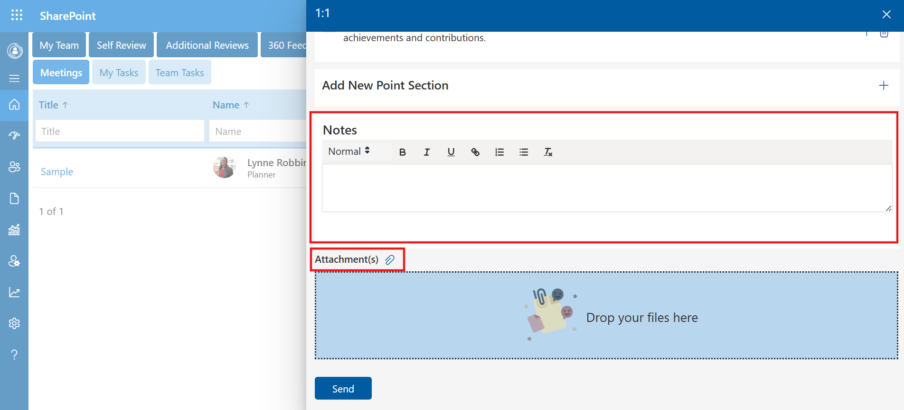
8. Sending the Meeting
Final Step
- Click Send to save the meeting.
- The meeting appears in the Meetings tab of all participants.
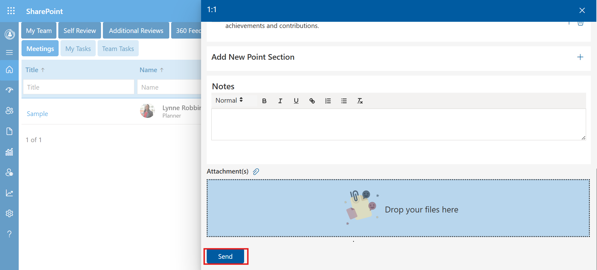
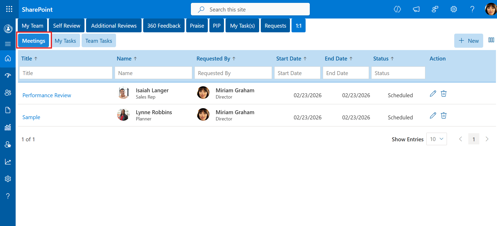
9. Editing or Completing a Meeting
What You Can Do
- Edit meeting details (title, time, agenda)
- Add or update action point
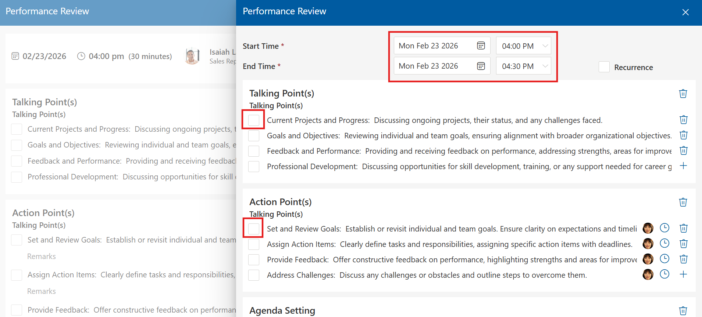
- Assign tasks
-
Click:
Update – Save changes
Update & Complete – Mark the meeting as complete
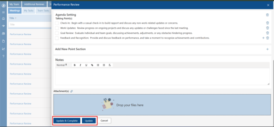
Reschedule or cancel the meeting if required
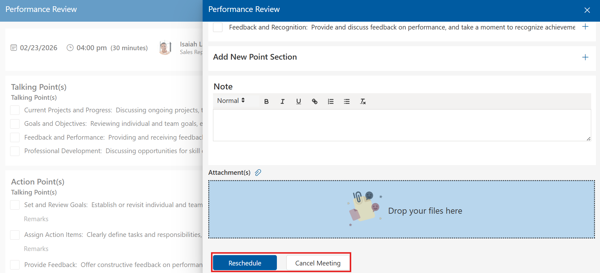
10. Employee Task Completion
Employee Actions
- Once the 1:1 is initiated, the employee receives a notification and the assigned 1:1 tasks become available in the My Task(s) section.
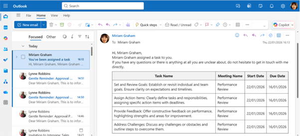
The employee must complete all assigned tasks by:
- Go to My task tab
- Click on 1:1
- Select the status of task
- Adding appropriate remarks
- Saving each task update
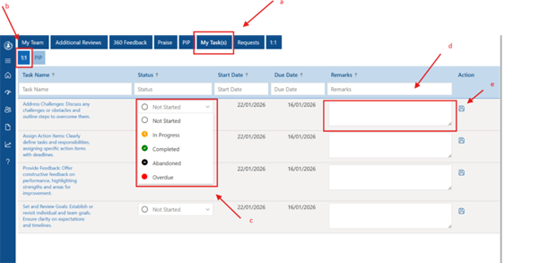
After Completing Tasks in a 1:1 Meeting
- Once all Action Points (tasks) associated with a 1:1 meeting is completed and updated, users can download the 1:1 meeting in detail as a PDF.
The downloaded PDF includes:
- Employee and Manager details
- Meeting date and duration
- Meeting status
- Talking Points
- Action Points with due dates and owners
The Performance Improvement Plan (PIP) module enables managers to formally document, monitor, and evaluate an employee’s performance improvement over a defined period. It ensures transparency, accountability, and structured follow-ups.
1. PIP Overview Screen
Purpose
The PIP overview screen displays all PIPs associated with the manager or employee.
- What You Can See
- In-Progress PIPs – Active performance improvement plans
- Completed PIPs – Closed plans with final outcomes
- PIP status, employee name, and duration
- Action menu (3-dot menu) for further actions
2. Creating a New PIP (+ Add)
How to Initiate a PIP
- Click the + Add button.
- The Create PIP panel opens.
Details to Configure
1. Select Employee
- Choose the team member to be placed under the PIP.
2. Reason for PIP
- Clearly state the performance concern or improvement area.
3. Start Date
- Start date of PIP.
4. End Date
- End date of PIP
5. Planned Activities
- Outline activities or focus areas to guide performance improvement.
3. Adding PIP Tasks
Purpose
Tasks help measure progress and define actionable goals during the PIP period.
To add PIP task enter following details:
- Task description
- Start date
- End date
- Click the + icon to add additional tasks.
4. Saving the PIP
Finalizing the Plan
- Review all entered details.
- Click Save to activate the PIP.
- The PIP status is now set to In-Progress.
5. Employee Task Completion & Acknowledgement
Employee Actions
- Once the PIP is initiated, the employee receives a notification, and the assigned PIP tasks become available in the My Task(s) section.
The employee must complete all assigned tasks by:
- Go to My task tab
- Click on PIP
- Select the status of task
- Adding appropriate remarks
- Saving each task update
After completing the assigned tasks, the employee must navigate to the PIP section to:
- Review the PIP details and task outcomes
- Provide their acknowledgement
- Sign the acknowledgement
Outcome
- The employee’s acknowledgement and signature are recorded under the Employee Response section.
- The signed acknowledgement confirms that the employee has reviewed the PIP and completed the assigned tasks, enabling the manager to proceed with the final decision-making process.
6. Managing an In-Progress PIP (3-Dot Menu)
Available Actions
From the 3-dot menu, managers can:
- Edit – Modify PIP details or tasks
- Make Decision – Conclude or extend the PIP
- View Tasks – Review assigned tasks and progress
7. Making a PIP Decision
Decision Options
When the manager selects Make Decision, the following options are available:
- 1. End PIP and Retain Employee
- 2. Extend PIP Until a Specific Date
- 3. Notify HR of Unsuccessful PIP
8. Manager Response & Sign-Off
Manager Responsibilities
- Add a detailed explanation in the Manager Response section.
- Sign the decision.
- Click Update to finalize and record the decision.
What It Includes
- Tasks completed and outcomes
- Areas of improvement
- Final performance assessment
- Decision history and acknowledgements
Available Actions
From the 3-dot menu :
- View – Open full PIP details
- View Tasks – Review all tasks and their statuses
- Export – Export the PIP document
Overview
The Performance Bonus feature allows your organization to automatically calculate employee bonus amounts based on their appraisal performance ratings. Once configured, the system computes each employee's bonus using their base salary, job title bonus settings, and their appraiser's review rating.
This guide covers everything you need to get started: enabling the module, configuring settings, entering employee salary data, setting up bonus rules per job title, reviewing bonus calculations, and generating reports.
Step 1: Enable the Performance Bonus Module
Before using the feature, you need to make sure the Performance Bonus module is turned on in your system settings.
- Click the Settings (gear) icon in the left navigation bar.
- From the Settings page, under the Features section, click on Modules.
- In the Modules panel that opens, scroll down to find Performance Bonus and make sure the toggle is switched ON.
Step 2: Configure Performance Bonus Settings
Once the module is enabled, you need to configure how the Performance Bonus behaves — including who can see it and what currency to use.
- From the Settings page, click on Performance Bonus Setting under the Advanced Settings section.
- The Performance Bonus Setting panel will open. Here you can configure the following:
Step 3: Enter Employee Base Salary
Each employee participating in performance appraisals needs a Base Salary entered in their user profile. This value is used to calculate the actual bonus amount.
- From the Settings page, click on User(s) under the User(s) section.
- Find the employee from the list and open their profile.
- In the Edit User panel, scroll down to find the Base Salary field and enter the employee's salary.
- Also confirm that the Job Title is filled in correctly. If not, enter it now, as it will be needed for Performance bonus
- Click Update to save the changes.
Make sure the Base Salary and Job Title are accurate before proceeding. These values directly affect the bonus calculation.
Step 4: Configure Job Titles for Performance Bonus
Now you need to set up how the bonus is calculated for each job title. This is done through the Job Title(s) section under Administration.
- Click on the Administration menu in the left navigation bar.
- From the dropdown, click on Job Title(s).
- The Job Title(s) panel will open, showing all existing titles. Find the job title for the employee who is part of the appraisal cycle.
- Click the Edit (pencil) icon next to that job title.
- In the Edit Title panel, configure the following bonus rules:
- Click Update to save the job title bonus configuration.
| Field | Description |
|---|---|
| Salary Option | Choose Percentage to calculate the bonus as a percentage of the salary, or choose a fixed amount option. |
| Calculate Based On | Select whether the calculation is based on Monthly or Yearly salary. |
| Percentage / Amount | Enter the percentage value (e.g., 20 for 20%) or fixed amount for this job title's bonus. |
| Active | Ensure the toggle is ON so this bonus rule is active. |
Step 5: View the Performance Bonus in HR Review
Once the Self Review, Manager Review, and HR Review have all been completed, the HR user can access the Performance Bonus tab within the employee's appraisal record to see the calculated bonus.
- Go to the Appraisals tab in the top navigation bar.
- In the HR Head – Admin View(Previously you have selected the users role in Performance bonus visibility in Performance bonus settings), locate the employee whose review you want to open.
- Click the Edit (pencil) icon next to the employee's appraisal record.
- The HR Review window will open. Click on the Performance Bonus tab.
- The Performance Bonus tab will display the complete bonus calculation breakdown.
The Performance Bonus breakdown includes the following information:
| Field | What it means |
|---|---|
| Base Salary | The employee's base salary as entered in their user profile. |
| Bonus Type | The bonus calculation method configured for the job title (e.g., Percentage 20%). |
| Eligible Performance Bonus | The maximum bonus amount the employee is eligible for, calculated from their base salary and bonus type. |
| Appraiser's Rating | The final rating given by the appraiser (e.g., 80.00%). |
| Bonus Amount | The actual bonus the employee receives, calculated as: Eligible Performance Bonus × Appraiser's Rating. |
Step 6: Access the Performance Bonus Report
The Performance Bonus Report gives you a consolidated view of all employees' bonus details across a selected appraisal cycle. This report can be filtered by Employee, Manager, Title and so on.,
- Click on the Reports icon in the left navigation bar.
- From the submenu, click on Performance Bonus Report.
- The report will open showing all employees along with their Manager's Name, Job Title, Department, Base Salary, and so on.
- Use the tabs at the top (Employee, Manager, Title, Department, Location, Company) to switch between different views of the report.
- Select the appraisal cycle year at the top right to filter the report for a specific period.
- The Total Amount at the bottom of the Employee tab shows the combined eligible bonus across all employees.
Our team is here to support you 24/5. Feel free to reach out, we’re always happy to help!